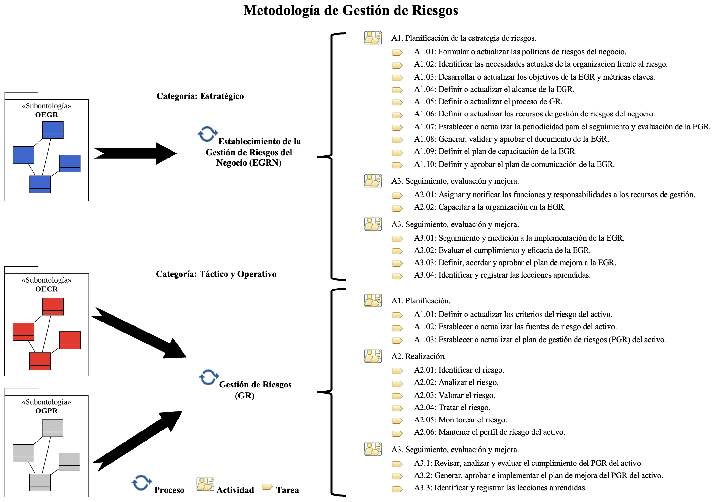

| RiskSoft: Metodología de Gestión de Riesgos |
 |
|
| Categorías | |
|---|---|
| Contenido |
Categorías de Procesos
La MGR está conformada por tres categorías de procesos las cuales permiten agrupar los procesos definidos de acuerdo con los niveles de gestión de una organización, los cuales son: 1. Estratégico: Categoría de procesos que soportan la definición, planificación y gestión estratégica de una organización y que permiten lograr el cumplimiento de la misión/visión de la organización. Además, proporciona lineamientos a los procesos tácticos de la organización. 2. Táctico: Grupo de procesos responsables de desplegar y hacer realidad las estrategias de una organización. Estos procesos proporcionan los lineamientos específicos para la consecución de los objetivos de los procesos operativos de la organización. 3. Operativo: Categoría de procesos que permiten generar valor a los clientes de toda la organización respecto a los productos o servicios que éstas ofrecen. Estos procesos ayudan al logro de los objetivos de la organización. Procesos
Los procesos básicos definidos para la MGR son: 1. Establecimiento de la Gestión de Riesgos del Negocio (EGRN): Este proceso está orientado al nivel estratégico de la organización. Proporciona un enfoque consistente para la definición y establecimiento una EGR que esté alineada con el enfoque de gobierno y que permita tener una visión holística del riesgo que ayude preservar el valor de la organización. A través de la definición de una política de riesgos que permita alcanzar los objetivos de la organización, con una cobertura clara de los activos que serán gestionados, objetivos y métricas claves para realizar la medición y control de la ejecución de la EGR. Además, permite especificar un enfoque estándar para la GR respecto a la naturaleza del negocio, que incluya las diferentes estructuras organizativas, los roles y responsabilidades que harán frente a los riesgos. Así como también, que permita garantizar el seguimiento y evaluación de la EGR para proporcionar resultados que promuevan la mejora continua y la documentación de las lecciones aprendidas. 2. Gestión de Riesgos (GR): Este proceso está orientado a nivel táctico y operático de la organización y brinda los elementos claves para definir y establecer el contexto de la GR, a través de la identificación de las diferentes fuentes causales de riesgos que tienen incidencia en los activos y que pueden estar en el contexto interno y externo de la organización. Así como también, los criterios que permitirán la toma de decisiones al momento de llevar a cabo la evaluación del riesgo, respecto a la cantidad y el tipo de riesgo que una organización está dispuesta asumir en el cumplimiento de los objetivos de sus activos. Cada uno de estos criterios deberán ser documentados en el plan de gestión de riesgos (PGR) del activo. Este PGR permitirá abordar la intención de la organización con la EGR y servirá como mecanismo para soportar la implementación de la GR de un activo. A través de la aplicación sistemática de actividades y tareas que soportarán la identificación, análisis, valoración, tratamiento y seguimiento de los riesgos. Las cuales deberán ser recopiladas, documentadas y comunicadas a través de una adecuada gestión del perfil de riesgo del activo. El PGR y el proceso de GR deberán monitoreados y evaluados para mejorar su eficacia.  Recursos de Gestión
En esta sección se realiza una descripción de cada uno de los recursos de gestión (estructura organizacional y rol) definidos para la MGR, indicando sus principales responsabilidades: 1. Comité de Riesgos del Negocio (CRN): Grupo de directivos y expertos seleccionados por la organización que tienen la función principal de realizar y dirigir el diseño e implementación de la EGR del negocio. Así como también, garantizar los resultados de la estrategia y respaldar la toma decisiones. 2. Director General Ejecutivo (CEO): Directivo con el más alto rango que tiene como responsabilidad la gestión y dirección de la organización, tendiente a garantizar que las actividades se realicen de manera eficiente para lograr el cumplimiento de los objetivos y la generación de ganancias o utilidades. 3. Evaluador (EV): Persona experta responsable de llevar a cabo la evaluación de la EGR. Así como también de asesorar al comité de riesgos en la elaboración de la propuesta de mejora de la EGR. 4. Grupo Directivo (GD): Grupo de altos directivos de la organización responsables de la planificación estratégica del negocio y la toma de decisiones conducentes al logro de los objetivos de la organización. Además, son los encargados de garantizar que la EGR funcione de manera correcta. 5. Miembros del Equipo de Trabajo del Activo (META): Profesionales perteneciente a un equipo de trabajo de un activo de la organización que asumen diferentes roles y responsabilidades respecto a sus conocimientos y experiencia. Además, que soportan la gestión del activo y colaboran en la identificación e implementación de las acciones frente al riesgo según corresponda. 6. Responsable de la Capacitación (RC): Profesional experto en las necesidades de formación requeridas por la organización y que será responsable de implantar el plan de capacitación de manera exitosa. 7. Responsable de la Gestión de Recursos Humanos (RGRH): Directivo responsable de rendir cuentas por la planificación y gestión de los recursos humanos, conforme a las políticas y necesidades de la organización. 8. Responsable de la Gestión de Riesgos del Activo (RGRA): Profesional encargado de soportar la definición e implementación del PGR del activo de la organización. Además, es responsable de la ejecución y supervisión de las tareas de GR del activo. Esta función también podrá ser realizada por el responsable del activo. 9. Responsable de la Gestión de Riesgos del Negocio (RGRN): Directivo responsable de rendir cuentas por el proceso de GR de la organización. Es un profesional experto, encargado de la definición, implementación y seguimiento de la EGR. Además, asesora a los diferentes responsables de la GR de los activos, en la identificación y tratamiento de los riesgos. 10. Responsable del Activo (RA): Profesional que rinde cuentas por un activo de la organización y que es el encargado de la ejecución de las prácticas de gestión tendientes a lograr los objetivos esperados. El RA, soporta la planificación de acciones de mejora y aprueba los cambios, de ser necesario. En lo referente a la GR, es el responsable de la planificación, ejecución y supervisión del PGR. 11. Responsable del Riesgo (RR): Profesional que conforma un equipo de trabajo de un activo de la organización y que tiene la responsabilidad de gestionar los riesgos individuales que le han sido asignados. Un RR debe colaborar en la identificación y definición de las acciones de control frente al riesgo, así como garantizar que se apliquen de manera eficaz conforme a lo establecido. 12. Stakeholders Externos del Activo (EAS): Cada una de las partes interesadas externas a la organización (consultores, proveedores, accionistas, clientes, entidades financieras, etc.) y que participan directamente en la ejecución y seguimiento del activo. En el contexto de la GR brindan asesoría en las diferentes tareas de gestión según sean las necesidades y la experiencia que puedan aportar. |